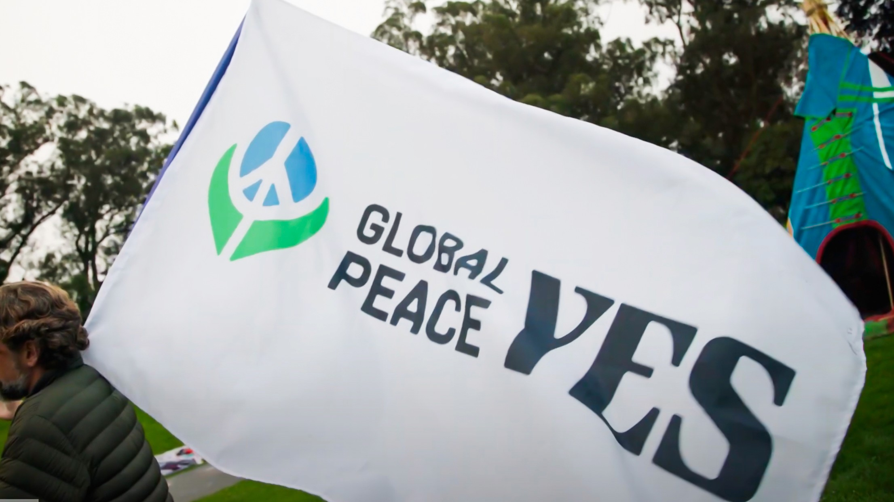
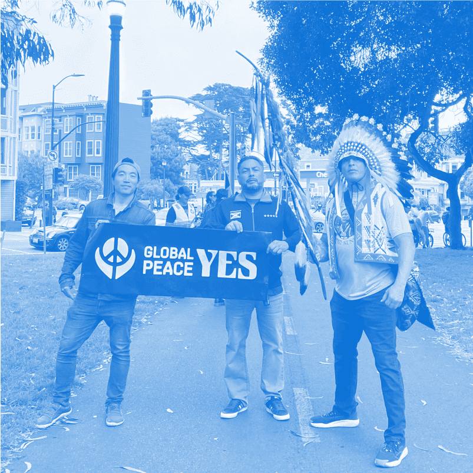
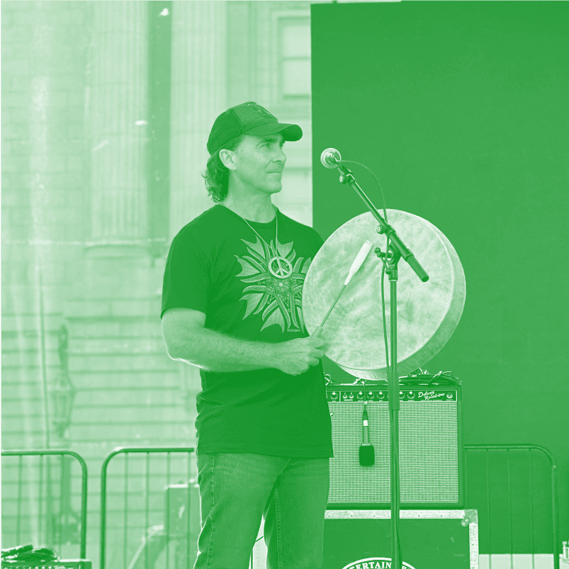
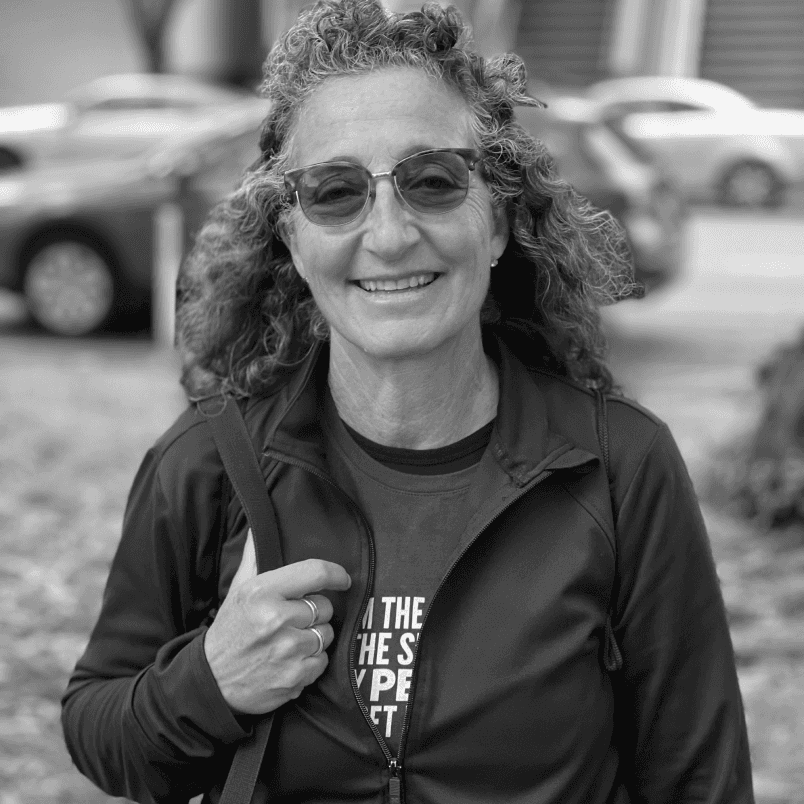
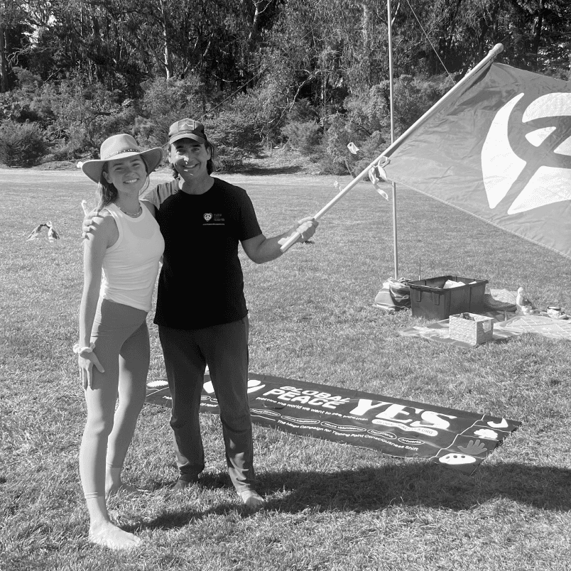
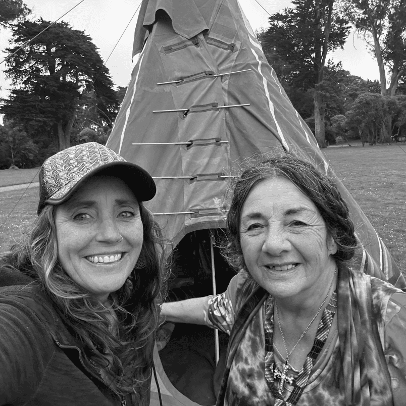
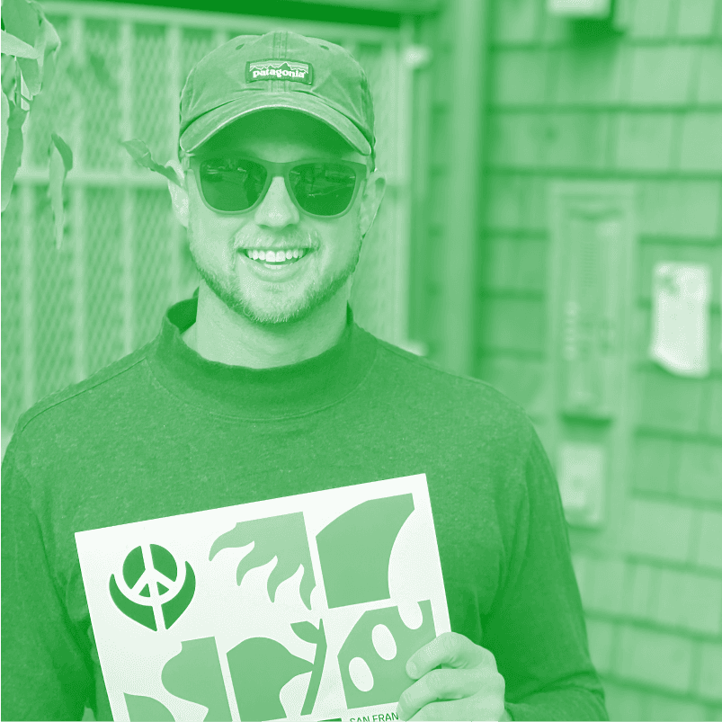
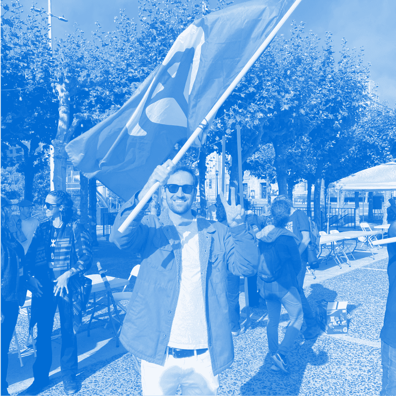

World War II
Nuclear bombs destroyed the Japanese cities of Hiroshima and Nagasaki at the end of WW2's defeat of fascism.
The ONE BILLION Verified Votes for Global Peace & Peace Champion Mobile App Engagement Campaign: GLOBAL PEACE YES (501c3) is a modern peace movement with NGO Special Consultative Status at the UN.
our mission
After being apart of major peace movements over the past 20 years, we launched GLOBAL PEACE YES to make peace a daily practice, uniting people around the world.

Within the past century, humanity has been consistently split between conflict and peace. Some of the world’s most detrimental war and conflict have occurred, at the same time that voices have made their mark in the journey for peace.
1940’s
Nuclear bombs destroyed the Japanese cities of Hiroshima and Nagasaki at the end of WW2's defeat of fascism.
The United Nations was formed from 194 member nations “to save succeeding generations from the scourge of war.”
1950’s
The Korean and Vietnam Wars in 1950's exacerbated the destabilization of the world's hemispheres.
The Hopi Elders warned the world to remember that we are One People and to choose peace before it’s too late.
1960’s
The Cold War Arms Race drives the Global Military Industrial Complex and Exploitation of Natural Resources; and the World is divided into First, Second and Third Class Countries.
The Beatles and Bob Marley opened hearts conquering the world with love and the power of music, and MLK led giant successful movements for liberation.
1970’s
The Vietnam War divided the world through its controversial politics, racial and class inequalities, and generational conflicts.
Globally, the war raised questions about the morality of U.S. intervention and the devastating effects of military actions on Vietnam and neighboring countries.
1980’s
Exposed deep societal divisions rooted into homophobia, public health neglect, and stigma. Initially labeled a “gay disease,” it fueled discrimination against LGBTQ+ communities.
The AIDS Crisis became a flashpoint for civil rights advocacy, shining a light on societal prejudices that would take decades to confront and begin dismantling.
2000’s
World Trade Center attacked on 9/11/2001 in New York City, United States unleashing the Global War on Terror and upsetting the balance of power in the Middle East.
Global Peace Walk 2000 completed its cross country pilgrimage from San Francisco to New York, calling for Global Peace Now supporting a Culture of Peace for the 21st Century.
today
Humanity is experiencing compounding effects of multiple interwoven crises that are growing in scale, such as Climate Change, Wars between nations, and more.
PeaceNow.com merges to form Peace Champion, Inc. to align the world around choosing peace in daily life and voting for the Declaration of Global Peace to create Peace Departments in governments worldwide.
Host or help organize a peace-focused event or activity with people in your city.
Get in Touch






our organization’s values
Our organization is built upon gestures of healing, just like a Peace Dove holding an olive branch.
We unite with our neighbors on our home of planet earth, which contains life and safety for all of us.
Just like the sun, our organization stands to ignite positive energy for those all around the world.
We value change, time, and connecting to our past and the future, similar to the moon’s phases.
Our organization deeply cares about all relationships to life, like how we are dependent on trees and vice versa.
We hold a high value on humanity’s role as caretakers of the earth, similar to caretaking of keeping a fire alive.
We believe that our species needs to act and walk in balance, just like holding hands across all nations.
We believe we have more in common than apart, and the importance of sharing, like breaking bread together.